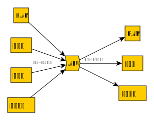
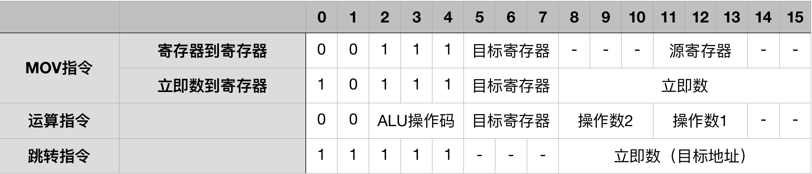

本文假设读者会基本的verilog。
hexo-inject:begin hexo-inject:end本文会实现一个CPU的原理装置，作者对几乎所有内容进行了大量的简化，以便于理解，但所制作的简易CPU能完成大部分功能。
设计思路
传统CPU的控制往往较为复杂，有多种多样的微操作，但本文设计的CPU只有下面几种“微操作”，且一定是按照这个顺序执行，即：
- 根据PC寄存器的值直接从指令Cache取出指令并利用组合逻辑进行译码1
- 将1到2个数据从某处连入ALU
- 将ALU运算结果输出到某处
即：

用这个方式实现的CPU仍然有所有必须的功能，且非常容易理解。
最简单的计算
CPU能做的事情无非是计算和控制，其中计算比较容易实现。
CPU中主要的计算部件，学过计组的人都知道，是ALU。
ALU 不过是一个简单的组合逻辑电路，实现如下：
1 | module ALU( |
寄存器堆
要计算，当然要有用来计算的数据，还要存放运算结果的地方。
一般来说大部分计算数据的来源和运输结果的去向都是寄存器。
很多计算都有两个输入和一个输出，所以我们的寄存器堆要有两组输出，每组输出由(输出寄存器编号,输出数据线)和一组输入(输入寄存器编号,输入数据线)。
相应verilog代码如下：
1 | module RegisterFile( |
最简单的控制与指令系统
我们来设计一个简单到不能再简单的指令系统：
指令格式

（你可能已经看出来了，寄存器到寄存器的MOV其实就是“运算为不运算”的运算指令）
程序计数器
为了方便起见，我们暂时不和RAM/ROM或是FLASH进行对接，而是手动实现一个简单的ROM，将程序代码放在里面：
1 | module ROM( |
而程序计数器就只不过是一个普通的reg [7:0]，放入read_address就能得到要执行的指令。
译码与执行
在执行时我们要把一条指令的执行过程分为三步：
- 计算下一个PC值，同时获得要执行的指令。
- 对指令进行译码，若有必要的话从寄存器堆中选中操作数对应的寄存器
- 将结果写回寄存器堆
那么我们可以做出这样的实现：
首先是构造一个三分频的时钟信号，用于驱动上面三步：
1 | module Clock( |
然后是CPU的顶层接口：
1 |
|
这样一来这个CPU就能跑了。
Futher work
- 和内存对接
- 流水线
1. 因此甚至不需要一个IR寄存器。 ↩